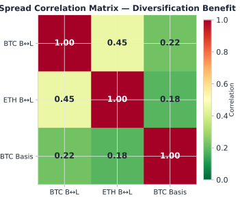
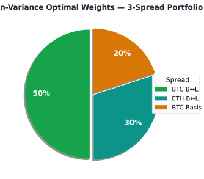
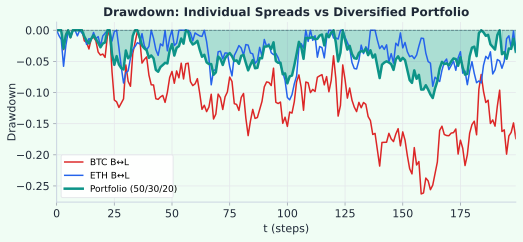

Statistical Arbitrage · บทที่ 16
Multi-leg Portfolios: บริหาร Portfolio ของ Spreads
หลาย spread พร้อมกัน — จัดการ correlation และ allocate capital อย่างมีประสิทธิภาพ
แก่นของบทนี้ — อ่านก่อน
การรัน spread เดียวมีความเสี่ยงจาก idiosyncratic event ของ pair นั้น — portfolio ของหลาย spread ลด risk แต่ต้องระวัง hidden correlation ที่เพิ่มขึ้นในช่วงวิกฤต
$$w^* = \arg\min_w\; w^\top \Sigma w \quad \text{s.t.}\;\; w^\top \mu \geq \mu_{\min},\; \mathbf{1}^\top w = 1,\; w \geq 0$$
16.1 ทำไมต้องหลาย Spread
การ diversify ข้าม spread ให้ประโยชน์หลัก:
ประโยชน์
ลด variance ของ P&L รวม — spread แต่ละคู่ไม่ correlated 100%
Deploy capital ต่อเนื่อง — ถ้า spread หนึ่ง "ไม่มีสัญญาณ" spread อื่นอาจมี
ลด dependency บน pair เดียว — ถ้า exchange หนึ่ง maintenance อีก strategy ยังรัน
ความเสี่ยง
Hidden correlation — BTC dump → ทุก crypto spread volatile พร้อมกัน
Capital lock-up — ต้องการ margin สำหรับแต่ละ spread แยกกัน
Operational complexity — monitor หลาย pair พร้อมกัน
16.2 Covariance Matrix ของ Spreads
นิยาม Σ = covariance matrix ขนาด n×n (n = จำนวน spread) โดย Σ_ij = Cov(ε_i, ε_j) = E[(ε_i − μ_i)(ε_j − μ_j)]
ในทางปฏิบัติมักแสดงในรูป correlation matrix (normalize ด้วย std ของแต่ละ spread) เพื่อให้อ่านค่าได้ง่ายกว่า — diagonal = 1.0 เสมอ ค่า off-diagonal = Pearson correlation ρ_ij ∈ [−1, 1]:
Correlation matrix ρ_ij = Σ_ij / (σ_i × σ_j) ← normalized covariance (ใช้แสดง/อ่านค่า)
Covariance matrix Σ_ij = ρ_ij × σ_i × σ_j ← ที่ใส่ใน MVO formula จริง
ตัวอย่าง 3 spreads (correlation form):
BTC_B↔L ETH_B↔L BTC_Basis
BTC_B↔L [ 1.00 0.42 0.15 ]
ETH_B↔L [ 0.42 1.00 0.08 ]
BTC_Basis[ 0.15 0.08 1.00 ]
หมายเหตุ: diagonal = 1.00 เพราะ normalize แล้ว — เมื่อใส่ใน MVO ต้อง de-normalize
กลับเป็น Σ ก่อนโดย: Σ_ij = ρ_ij × σ_i × σ_j

Correlation heatmap — สี่เหลี่ยมเข้มหมายถึง correlation สูง (ไม่ดีสำหรับ diversification)
16.3 Mean-Variance Allocation
เป้าหมาย: หา weight vector w ที่ maximize risk-adjusted return:
max w'μ − λ × w'Σw
w
subject to: Σ w_i = 1, w_i ≥ 0, w_i ≤ w_max
สูตร closed-form (ก่อนใส่ constraints): w* = (1/2λ) × Σ⁻¹ × μ
หมายเหตุ: สูตรนี้ใช้เมื่อ ignore constraints — ในทางปฏิบัติ clip ด้วย [0, w_max] แล้ว normalize ตาม §16.6
โดย:
μ = vector ของ expected return แต่ละ spread
Σ = covariance matrix
λ = risk aversion parameter (ยิ่งสูง = conservative มากขึ้น)
w* = optimal weights
ข้อควรระวัง
Mean-variance optimization sensitive มากต่อ estimate ของ μ — error เล็กน้อยใน μ ทำให้ w* เปลี่ยนแปลงมาก วิธีแก้: ใช้ shrinkage (เช่น Ledoit-Wolf) หรือ equal-weight เป็น baseline แล้วปรับ deviation ตาม conviction เท่านั้น
Walk-Forward Test สำหรับ Portfolio Weights — น้ำหนักที่ได้ stable ใน out-of-sample ไหม?
MVO weights ที่ optimal ใน in-sample อาจไม่ stable เลยใน out-of-sample — นี่คือ "error maximization" problem (Michaud 1989): MVO ขยาย estimation error ของ μ และ Σ ทำให้ weight swing รุนแรงระหว่างรอบ reoptimization
แบ่งข้อมูล: 6 เดือนแรก = training → compute w*; เดือน 7–9 = out-of-sample → วัด realized Sharpe
เลื่อน window ทีละเดือน (rolling) → ดูว่า w* เปลี่ยนแปลงแค่ไหนแต่ละรอบ
สัญญาณไม่ดี: weight ของ spread เดิมกระโดด >30% ระหว่างรอบ → μ estimate ไม่ stable → ใช้ equal-weight แทน
def portfolio_walk_forward(returns_df, train_months=6, test_months=3):
results = []
prev_w = None
for start in rolling_windows(returns_df, train_months, step=1):
train = slice(start, start + train_months)
test = slice(start + train_months, start + train_months + test_months)
w_mvo = portfolio_allocate(estimate_mu(returns_df[train]),
estimate_cov(returns_df[train]))
w_equal = [1/n_spreads] * n_spreads
sharpe_mvo = compute_sharpe(returns_df[test] @ w_mvo)
sharpe_equal = compute_sharpe(returns_df[test] @ w_equal)
weight_jump = max(abs(w_mvo[i] - prev_w[i]) for i in range(n_spreads)) if prev_w else 0
results.append({"sharpe_mvo": sharpe_mvo, "sharpe_equal": sharpe_equal,
"max_weight_change": weight_jump})
prev_w = w_mvo
return results
# Rule: ถ้า sharpe_equal >= 0.9 × sharpe_mvo โดยเฉลี่ย → ใช้ equal-weight ใน production
Concentration Risk — 3 BTC Spread ไม่ใช่ Diversification จริง
Portfolio ที่ประกอบด้วย BTC Bybit↔Lighter + ETH Bybit↔Lighter + BTC Perp Basis ทั้งสามตัวมี common factor ร่วมกัน: crypto market sentiment ในช่วง BTC crash ทุก spread ถูก shock พร้อมกัน diversification benefit ที่วัดได้ในช่วงปกติจะหายไปทันที
Spread Common Factor Risk ที่แท้จริงที่ต่างกัน BTC Bybit↔Lighter BTC price + venue liquidity Lighter-specific liquidity event ETH Bybit↔Lighter BTC price (ETH corr ≈ 0.8) + venue ETH protocol/upgrade event BTC Perp Basis BTC price + market leverage sentiment Funding rate cycle timing
วิธีลด concentration: เพิ่ม spread จาก asset class ที่ต่างออกไป (เช่น Gold futures basis, FX cross, Equity stat arb) — ไม่ใช่แค่เพิ่มจำนวน spread ใน crypto เพราะ diversification นั้นเป็น "ภาพลวงตา" ในช่วงวิกฤต
16.4 Portfolio Weight — Pie Chart

ตัวอย่าง capital allocation — BTC spread ได้ weight มากสุดเพราะ Sharpe สูงสุดและ risk ต่ำสุด
16.5 Drawdown Comparison

Portfolio ผสม (เขียว) มี drawdown น้อยกว่าและ P&L smoother กว่า individual spread
16.6 Pseudo-code portfolio_allocate()
def portfolio_allocate(expected_returns, cov_matrix,
risk_aversion=1.0, max_weight=0.6,
min_weight=0.05):
"""
expected_returns: vector of μ_i (annualized expected return)
cov_matrix: Σ matrix (n×n)
risk_aversion: λ parameter (higher = more conservative)
max_weight: cap ต่อ strategy เดียว
min_weight: minimum allocation ถ้า include strategy นั้น
"""
n = len(expected_returns)
# Inverse covariance (Ledoit-Wolf shrinkage recommended)
inv_cov = ledoit_wolf_inverse(cov_matrix)
# Raw MV optimal weights
raw_weights = inv_cov @ expected_returns / (2 * risk_aversion)
# Clip to [0, max_weight]
weights = clip(raw_weights, 0, max_weight)
# Zero out strategies below min_weight threshold
weights = [w if w >= min_weight else 0.0 for w in weights]
# Normalize to sum = 1
total = sum(weights)
if total > 0:
weights = [w / total for w in weights]
return weights # list of n weights summing to 1.0
16.7 Correlation Risk ในช่วงวิกฤต
Hidden Correlation Problem
ในช่วงตลาดปกติ BTC spread กับ ETH spread correlate 0.42 — แต่ในช่วง BTC dump correlation อาจพุ่งเป็น 0.85+ เพราะทั้งสองตลาดถูก panic ขายพร้อมกัน
นี่คือ "correlation breakdown" — assumption ของ portfolio optimization ล้มเหลวตอนที่ต้องการ protection มากที่สุด
def detect_correlation_spike(spread_returns, window=30, threshold=0.70):
"""ตรวจว่า rolling correlation ระหว่าง spreads สูงขึ้นผิดปกติ"""
rolling_corr = compute_rolling_correlation(spread_returns, window)
max_off_diagonal = max_corr_excluding_diagonal(rolling_corr)
if max_off_diagonal > threshold:
return True, f"Correlation spike: {max_off_diagonal:.2f}"
return False, None
Regime Covariance — Σ ใน Stressed Regime ต่างจาก Normal อย่างมาก
MVO ใช้ Σ ตัวเดียวตลอด แต่ตาม Regime-Switching model (บทที่ 9) covariance matrix เปลี่ยนตาม regime:
Regime ลักษณะของ Σ ผลต่อ Portfolio Normal Correlation ต่ำ (0.3–0.5), variance ต่ำ MVO weights ทำงานตามที่คาด Stressed Correlation สูงขึ้น (0.6–0.8), variance เพิ่ม Diversification ลดลง, ควรลด total size Broken Correlation → 1.0, variance พุ่ง Portfolio กลายเป็น undiversified — halt ทุก new entry
แนวทาง: estimate Σ แยกตาม regime (ใช้ข้อมูลเฉพาะช่วง Normal สำหรับ MVO ปกติ) และใช้ Σ_stressed ในการ stress-test portfolio — ถ้า stressed-Sharpe < 0.5 ของ normal-Sharpe → ลด max_weight ต่อ spread ลง
16.8 Running Example — 3 Spread Portfolio
🔁 Running Example: Portfolio ของ 3 Spreads
Strategy Weight Capital Expected Sharpe σ ต่อปี
BTC Bybit↔Lighter 50% $150,000 2.1 12% ETH Bybit↔Lighter 30% $90,000 1.7 15% BTC Perp Basis 20% $60,000 1.4 8% Portfolio 100% $300,000 2.3 10%
สังเกต: Portfolio Sharpe (2.3) สูงกว่า Sharpe ของแต่ละ strategy เดี่ยว — เป็นผลจาก diversification benefit เมื่อ correlation ไม่เท่ากับ 1
ข้อปฏิบัติจริง
Re-optimize portfolio weights ทุกสัปดาห์ (ไม่ใช่ทุกวัน — transaction cost ของการ rebalance 3 spreads ทุกวันสูงกว่า diversification benefit ที่ได้) ตั้ง minimum weight 10% ต่อ spread (ไม่ให้ weight เป็น 0 เพราะจะทำให้ portfolio ไม่ diversified) ถ้า correlation ระหว่าง spread ใดก็ตามเกิน 0.70 ใน rolling 7 วัน → นับเป็น position เดียวในการคำนวณขนาด
Model Risk — ข้อจำกัดของ MVO
MVO sensitive มากต่อ estimation error ของ μ — error เล็กน้อยทำให้ weight swing รุนแรง ในทางปฏิบัติ equal-weight (1/N) ให้ผล out-of-sample ดีกว่า MVO ในหลายงานวิจัย Correlation spike → 1.0 ในช่วงวิกฤตทำให้ diversification benefit หายไปพอดีตอนที่ต้องการมากที่สุด — ดู Walk-Forward Test ใน §16.3 เพื่อตรวจว่า weights stable หรือเปล่า
16.9 แบบฝึกหัด
แบบฝึกหัดบทที่ 16
ข้อ 1: ถ้า BTC dump ทำให้ correlation ระหว่าง BTC และ ETH spread เพิ่มเป็น 0.90 — ควรทำอย่างไร?
คำตอบ: ลด size ทั้ง portfolio ลง เพราะ diversification benefit หายไป
เมื่อ correlation สูงขึ้น effective portfolio variance เพิ่มขึ้น — portfolio ที่เคย safe ตอนนี้มี risk สูงกว่าที่ model สมมติ
วิธีปฏิบัติ: ถ้า max pairwise correlation > 0.70 → ลด total exposure เป็น 50% จนกว่า correlation กลับสู่ปกติ
ข้อ 2: ทำไม equal-weight portfolio มักดีกว่า MV optimal ในทางปฏิบัติ?
คำตอบ: เพราะ MV optimization sensitive มากต่อ estimation error ของ μ
μ ที่ estimate ผิด 1% อาจทำให้ weight เปลี่ยนแปลง 20-30% — in-sample optimal แต่ out-of-sample แย่
ข้อ 3: เพิ่ม spread ที่ 4 เข้า portfolio — ควรตรวจสิ่งใดก่อน?
คำตอบ: ตรวจ 3 สิ่งหลัก:
Correlation กับ existing spreads: ถ้า > 0.60 → อาจไม่คุ้มค่า หรือต้องลด weight ของ existing spreads ลงNet Sharpe ของ portfolio หลัง add: Portfolio Sharpe ต้องเพิ่มขึ้น ไม่ใช่ลงCapital sufficiency: แต่ละ leg ต้องการ margin — ตรวจว่า total margin requirement ไม่เกิน available capital
🏛️ ห้องสมุด Options & Arbitrage Statistical Arbitrage — เริ่มต้น